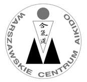
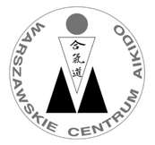

Kościuszki 38
wtorek i czwartek
dzieci młodsze: 18.15 - 19.00
dzieci starsze: 19.00 - 19.45
dorośli: 19.50 - 21.20
dzieci młodsze: 18.15 - 19.00
dzieci starsze: 19.00 - 19.45
dorośli: 19.50 - 21.20
Nasza sekcja istnieje w Pruszkowie od września 2010 roku. Treningi prowadzi Rafał Jaroszewski 3DAN Aikido.
Jesteśmy częścią Warszawskiego Centrum Aikido. Aikido, którego uczymy należy do linii Kobayashi
Ćwiczą z nami dzieci od 6 roku życia podzielone na dwie grupy młodszą i starszą oraz dorośli
Ćwicząc z najmłodszymi największy nacisk kładziemy na ich rozwój ruchowy i dobrą zabwę. Na tym etapie zależy nam przede wszystkim by dzieci przyzwyczaiły się do ruchu i go polubiły tak by w dorosłym życiu nawet jak nie zostaną Aikidokami były zdrowe i sprawne
Grupa dziecięca strasza uczy się już Aikido jednak techniki są dostosowane do wieku dzieci a aspekt ogólnorozwojowy jest cały czas ważnym elementem treningu.
Poza rozwojem ruchowym Aikido uczy dzieci współpracy w grupie, umiejętności przegrywania i koncentracji.
Przeznaczone są dla osób w różnym wieku i nie tylko dla fascynatów sztuk walki. Trening Aikido oprócz nauki techniki jest ciekawą formą pracy nas sprawnością fizyczną i rozwojem ruchowym. Pozwala odreagować stres życia codziennego, spędzić miło czas w przyjaznej atmosferze i przy okazji nabyć nowych umiejętności
Nie każdy kto przyjdzie na zajęcia zostanie mistrzem ale każdy ma szansę trzeba tylko przyjść i zacząc trenować
| 1 trening | 40zł |
| 4 treningi | 100zł |
| 1 miesiąc | 170zł |
| kwartał | 450zł |
| 10 miesięcy | 1350zł |
| 2 osoby | 150zł/os |
| 2 osoby 4 treningi | 80zł/os |
| 3 osoby i więcej | 120zł/os |
| 3 osoby 4 treningi | 65zł/os |
Nowy sezon zaczynamy 6 września
Zapraszamy